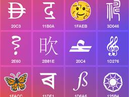
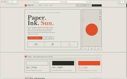

直近1週間の人気フィード
はてブ3件以上・直近7日（Discover RSSと同内容）

緊急で社内Jev勉強会を開催したらアイデアがバンバン出て頭が柔らかくなった 315
315 LayerX エンジニアブログ
LayerX エンジニアブログ
はてブ315件
こんにちは。バクラク事業部でエンジニアをしているpon)です。 社内で TypeSafe AI の Jev を題材にした勉強会を開催し、社内のエンジニアが50人以上参加してくれました！ 30分の短い会でしたが、終わってみるとサービスにJevを組みこむアイデアが50件を超えました。この記事では、なぜわざわざ勉強会という形にしたのかと、そこで何が出てきたのかを紹介します！ なぜ勉強会にしたのか 私が、Jev を触って最初に思ったのは、「今まで自分たちが持っていた AI アプリケーション開発の頭ではいけない！！」ということでした。もちろん、既存の LLM 呼び出しの中でJevが使える箇所をJevに変…
1日前

Claude Codeで開発期間を2.5か月から1か月に縮めた「ハーネス」の設計手法 275 SmartHR Tech Blog
SmartHR Tech Blog
はてブ275件
こんにちは。SmartHRの情シス領域でプロダクトエンジニアをしているaniです。 入社して3か月が経ちました。この3か月で取り組んだのは、情シスプロダクトに新しい機能を1つ追加する開発です。まだ世に出していない機能なので、以降は「今回の機能」と書きます。当初の見積もりは実質工数でおおよそ2.5か月ほどでしたが、Claude Code向けの「ハーネス」を先に作ってから開発を始めたところ、大きな手戻りがないままほぼ1か月で実装を一通り終えられました。 この記事では、そのハーネスをなぜ作ったのか、どういう処理の流れになっているのか、そしてうまくいった点と工夫した点を紹介します。 ハーネスは、AIエ…
3日前

「Unicode 18.0」がリリース ～秦代の「小篆」、女真文字を追加。新しい絵文字は9種／13,007文字が追加。収録文字数の総計は172,808文字に 41窓の杜
はてブ41件
The Unicode Consortiumは9月16日（米国時間）、「The Unicode Standard, Version 18.0」を公開した。昨年9月の「Unicode 17.0」に続くメジャーアップデートで、13,007文字が追加。収録文字数の総計は172,808文字となった。
1日前

BigQueryのスロット、返し忘れていませんか? fluid scalingによるスロット費用最適化 26 エムスリーテックブログ
エムスリーテックブログ
はてブ26件
エムスリーでは、BigQuery EditionsでAutoscalingを使っています。BigQueryのスロットは使った分に応じて課金されると思いがちですが、厳密には確保したスロットに応じて課金されます。BQのfluid scaling機能を有効化すると、確保したスロットを素早く解放でき、費用の最適化につながります。この記事では、BigQuery のスケーリングの仕組み、何に対して課金されているか、max_slots 調整の取り組み、fluid scaling の効果について書きます。 データ基盤チームの橋口です。この記事はデータ基盤チーム & Unit9（エビデンス創出プロダクトチーム）…
1日前

AIに「アクセシビリティを改善して」と頼んだら、lintエラーだけが消えたコードが返ってきた 26 RAKUS Developers Blog | ラクス エンジニアブログ
RAKUS Developers Blog | ラクス エンジニアブログ
はてブ26件
こんにちは。ラクスのフロントエンド推進課の亀ノ上です。 Webアクセシビリティは、2022年のチームの課題棚卸しで私が挙げたテーマです。その後もR&Dの取り組みとして続けてきましたが、期日のある機能開発と並べると優先順位は後ろになり、着手には至っていませんでした。 今回、エンドユーザー向けの公開画面を持つ機能の開発で、Webアクセシビリティが要件になりました。対応を進める中で作ったのは、Webアクセシビリティを向上させる仕組みではありません。「どこが直せるのかを、プロダクトに手を入れずに知る」ためのレポート作成ツールでした。 この記事は、ツールの設計判断と、AIにどこまで任せられるのかが見えた…
1日前

SPAを丸ごと差し替えながら、画面単位で新基盤へ引っ越した話 24 freee Developers Hub
freee Developers Hub
はてブ24件
こんにちは。freee販売のエンジニアをやっているshuchanです。 この記事では、数年かけて育ってきたReact製の画面を、止めずに、かつ機能追加を続けながら、新しいフロントエンド基盤へ引っ越している話を紹介します。 フレームワークのバージョンアップではなく、「ディレクトリ構成・router・データフェッチ・スタイリング・テスト基盤をまとめて別物に差し替える」という、ほぼフルリメイク的な移行です。 なお、記事中のリポジトリ名・ディレクトリ名は、わかりやすさを優先して汎用的な名前（旧FE / 新FE）に置き換えています。規模に関する数値も丸めています。 TL;DR 新旧フロントエンドの共存構…
1日前
楽楽明細における、障害対応時の動き方の話 35 RAKUS Developers Blog | ラクス エンジニアブログ
はてブ35件
こんにちは。楽楽明細の開発をしている者です。 運用目線での顧客視点として、障害対応の話を書こうと思います。 障害が起きたとき、私が頭の中でどういう順番で何を判断しているのか。それを文章にしてみます。 はじめに 前提になる楽楽明細の事情 私の動き方 まず騒ぐ 何が起きているかをざっと把握する 顧客への影響を見極める 止血が要るかで動きを分ける 原因調査で意識していること そのケースがなぜ起きたかを追う 仮説を複数立ててから動く AI との分業 属人化させないために
2日前

Starlinkの航空機利用、国際線のIPアドレス変化を追う 14 IIJ Engineers Blog
IIJ Engineers Blog
はてブ14件
僕の従兄弟はプロゲーマーの「ときど」選手です。彼は仕事柄、世界中の大会に参戦するわけですが、最近はStarlink搭載の航空機に乗る機会もあるようです。そこでI...
1日前

Claude Code Routinesを用いてIssueを自動で解消する仕組みを展開した話 46 RAKUS Developers Blog | ラクス エンジニアブログ
はてブ46件
はじめまして。昨年新卒として株式会社ラクスに入社し、現在はHRソリューション開発部楽楽勤怠開発課でバックエンドエンジニアをしているmurosyoです。普段は楽楽勤怠の機能開発を担当しています。開発本部が掲げる『顧客に価値を高速提供できるAIネイティブな開発組織への変革』というビジョンのもと、ClaudeのSkillsやAgentsなどを整備・展開しています。 今回は、私がチームに導入を試みた「Claude Codeを用いたIssueの自動解消」の取り組みについて、構成の全貌や、実際にやってみて直面した「AIネイティブな開発ならではの壁」について、包み隠さずお話ししたいと思います。 はじめに 背…
3日前

浮世絵にインスパイアされたUIコンポーネント、和紙・墨・朱の和のカラースキームが癒やされる -Hinomaru Ink UI Kit 23
 コリス
コリス
はてブ23件
日本の浮世絵にインスパイアされ、日の丸のポスターのように描かれた再利用可能なUI要素・UIコンポーネントのキットを紹介します。 テキストや罫線には墨色、背景色にはくすんだ和紙のような色、アクセントカラ
2日前

SRv6 uSID TI-LFAを検証してみた 14 NTT docomo Business Engineers' Blog
NTT docomo Business Engineers' Blog
はてブ14件
本記事では、ネットワークに障害が発生した際に高速迂回する技術であるTI-LFA (Topology Independent Loop-Free Alternate) の検証結果について紹介します。TI-LFAとは、Segment Routingを組み合わせて事前に計算したBackup pathを使って、任意のトポロジーで障害の高速迂回を実現する技術です。今回は、Segment RoutingとしてSRv6 uSIDを使用しました。 はじめに uSIDとTI-LFAの説明 uSID TI-LFA 使用した機種 TI-LFAの設定 Junos/Junos EVO (設定例) TI-LFA設定 uS…
3日前
VRAM容量32GBで30万円未満なIntelグラボ「Intel Arc Pro B70 Creator 32GB」でローカルLLM「Qwen3.8 27B」や動画生成AI「MiniMax H3」を実行して生成速度を確かめてみた 3 GIGAZINE
GIGAZINE
はてブ3件
大規模言語モデル(LLM)や画像・動画生成AIを高速実行するにはモデル全体を高速なVRAMに収める必要があります。しかし、AI需要に伴うグラフィックボードの価格高騰によって、VRAM容量32GBのNVIDIA GeForce RTX 5090は100万円を超えるようになってしまいました。一方で、Intel製GPU「Intel Arc Pro B70」を搭載したVRAM容量32GBのASRock製グラフィックボード「Intel Arc Pro B70 Creator 32GB」は30万円以下で購入可能。そんなIntel Arc Pro B70 Creator 32GBを実際に購入したので、LLMや動画生成AIなどを実際に実行してみました。
1時間前
1行のプロンプトから3Dモデルを生成 ～Maker Faire Tokyoで動いていた「ComfyUI」デモが実は先端研究だった【生成AIストリーム】 4窓の杜
はてブ4件
こんにちは、しらいはかせです。筆者は普段、AICU Japanという会社で『つくる人をつくる』をビジョンに、生成AIやメディア芸術の研究・実践をしています。
1日前
自ら、問いに向かい合うことの有難さについて 26 ニューロサイエンスとマーケティングの間 - Between Neuroscience and Marketing
ニューロサイエンスとマーケティングの間 - Between Neuroscience and Marketing
必読 · 安宅和人
1.4/50 Summilux, Leica M (typ240), RAW Wakayama-castle, Japan (2017) 先日、ナビエ・ストークス方程式をめぐる数学の超難問について、OpenAIが解決したとする発表を行った。9月8日のことだ。使われたのは、GPT-6 Astraを大きく上回るという開発中の内部モデルと、それを動かす約1万のAIエージェントだ。Navier–Stokesだけで約270万回のメッセージをやり取りし、約1300億output tokenを生成したという。最初のエージェントを走らせてから約88時間後、AIは解に到達した。9月1日に着手し、6日にはLean…
6日前
Windows 11搭載の一部ノートPCでタスクバーのすぐ上がマウス操作できない問題／日本マイクロソフトが対処法を案内 3窓の杜
はてブ3件
Windows 11搭載のノートPCで、タスクバーのすぐ上をマウス操作できなくなることがあるとのこと。日本マイクロソフト（株）が9月14日、自社のサポートブログで明らかにした。
1日前

速報: Rails 8.1.3.1アプリをRuby 4.0.7にアップデートしたらJSONデコードでエラー 10 TechRacho
TechRacho
はてブ10件
現象 https://techracho.bpsinc.jp/hachi8833/2026_09_15/159
4日前